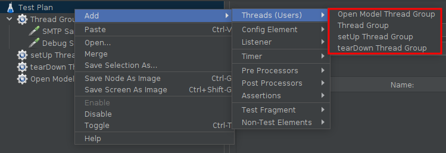

Müssen unterhalb einer Thread Group definiert werden
Senden Requests, empfangen Responses
Der Reihenfolge des Auftretens im Testbaum nach ausgeführt
Gruppiert und einzeln konfigurierbar
Sammeln verschiedenste Ergebnisse:
Success/Fail
Antwortzeit
Größe der empfangenen Daten
HTTP(S) Status Code
Lektion 2 - Elemente eines Testplans
Welche Elemente gibt es alles?
Wie können diese konfiguriert werden?
Testplan
Wurzel des Testbaums
Spezifiziert grundsätzliche Einstellungen
Umgebungsvariablen
Threadgruppen simultan oder einzeln laufen lassen?
Funktionales Testen (Sammeln aller Antworten anstelle selbst definierter)

Thread Group
Einstiegspunkte
Controller für die Threads
Anzahl an Threads (pro Thread eine Verbindung)
Ramp-up
Anzahl der Wiederholungen
Thread Groups arbeiten unabhängig voneinander
Thread Group

Ramp-Up
- Beispiel: 10 Threads, 100 Sekunden ramp-up
Start aller 10 Threads nach 100 Sekunden
Jeder Thread startet 10 Sekunden (100/10) nach dem vorherigen
- Beispiel: 30 Threads, 120 Sekunden ramp-up
Start aller 30 Threads nach 120 Sekunden
Jeder Thread startet 4 Sekunden (120/30) nach dem vorherigen
Starten
Start: Selektierte Thread Group starten
Start no pauses: Selektierte Thread Group ohne Timer starten
Validate: Minimales Starten der Thread Group (1 Thread, 1 Iteration, keine Timer)
Variationen

setUp: Ausführung vor den Tests
tearDown: Ausführung nach den Tests
open model: Variable Anzahl an Threads (noch experimentell, → Dokumentation)
Samplers

Verfügbare Samplers

HTTP Request Sampler
Sendet HTTP/HTTPS Requests
Dateien anhängbar
Vom Webserver empfangen (Standardmäßig):
Bilder
Java-Applets
Stylesheets sowie referenzierte Resourcen
Externe Skripte
frames, iframes
Hintergrundbilder (body, table, TD, TR)
Hintergrundsounds
Advanced settings

Logic Controllers
Müssen unterhalb einer Thread Group definiert werden
Steuern die Verarbeitung eines Tests
Definieren von Logik
Können die Ausführreihenfolge von Sampler ändern
Auch Loops möglich
Verfügbare Logic Controller

Beispiel: Abfolge
Reihenfolge: Login → Load Search Page → Search "A" → Load → Search "B" [→ Load → Search "A" → …]
Beispiel: If-Condition
Sprache Standardmäßig JavaScript
JavaScript Ausdruck umklammert mit
__javaScript()
Aufgabe 2.1: Sampler und Logic Controllers
Erstellt einen Performancetest gegen den im Hello World Beispiel gezeigten Server (https://jmeter.k.anderscore.com/testapp/). Dabei soll folgendes eingehalten werden:
Es sollen bis zu 100 Nutzer simuliert werden
0.1 Sekunden nach dem vorherigen Nutzer startet ein neuer Nutzer seine Anfragen
Jeder Nutzer tätigt mit einer Chance von 50% ein GET-Request
Jeder Nutzer tätigt maximal 10 GET-Requests
Untersuchen Sie weitere Sampler / Logic Controller auf ihre Funktionsweisen.
Hinweise:
Fügen Sie der Thread Group zur Betrachtung der Ergebnisse einen
Summary Reporthinzu (add → Listener → Summary Report)Versuchen Sie fernen, den Test über das CLI zu starten
Bislang tätigt jeder Nutzer seine 10 Anfragen und hört dann auf. Wie kann dafür gesorgt werden, dann dieser Nutzer immer von vorne beginnt?
Listeners
Bereitstellung von Informationen
Auf beliebiger Ebene
Testplan-Ebene: Sammeln der Daten von allen Sampler
Thread-Group-Ebene: Alles, was der Thread Group zugehörig ist
…
Speicherung als CSV oder XML möglich
Verfügbare Listeners

Ergebnispräsentation
Alle Listener sammeln alle Daten von den Sampler ein. Einziger Unterschied: die Repräsentation
Graph Results: Plotten der Ergebnisse als Graph
View Result Tree: Details zu Sampler Requests und Responses als HTML oder XML
Summary Report: Stochastische Kenngrößen zu Sampler Requests und Responses
Performance
- Viele Listener sind aufwendig
→ Hoher Speicherverbrauch
→ Hohe CPU Auslastung
→ Verfälschte Ergebnisse

→ Besser: Darstellung als HTML Report
Timers
Pause vor Samplers im Scope
Simulieren "Bedenkzeit" von Nutzer
Addition bei mehreren Timer
Beispiele:
Constant Timer: Festgelegte Zeit (default 300 ms)
Uniform Random Timer: Gleichverteilt zufällig
Gaussian Random Timer: Normalverteilt zufällig
Synchronizing Timer: Warten, bis x Threads warten
Assertions
Asserts auf Responses nach Sampler im Scope
"Testen" auf Richtigkeit
Auch direkt einem Sampler unterordbar
Beispiele:
Response Assertion: Check auf Patterns
Size Assertion: Länge des Responses
HTML Assertion: HTML Syntax
Assertion Listener, einsehen der Ergebnisse

Configuration Elements

Modifikation von Request
Hierarchie: Spezifische Configs überschreiben generische
Typische Anwendung:
Generisches Setzen einer Ziel-URL
Setzen von HTTP Header
Setzen von Cookies
JDBC konfigurieren
Configuration Elements: HTTP Request Defaults

Request Defaults
Alle Sampler nutzen hier definierte Einstellungen (wenn nicht spezifischer definiert)
Aufgabe 2.2: Listeners, Timers, Assertions und Configuration Elements
Erweitern Sie den vorherigen Performancetest um folgende Funktionalitäten:
Jede
/hellound/worldRequest soll in 5er Gruppen gestellt werden (Timeout 100ms)Fügen Sie passende Configurations hinzu, um im Falle einer Adressänderung (z.B. anderer Port) nicht alle Sampler anpassen zu müssen
Machen Sie sinnvolle Assertions auf die Responses
Testen Sie verschiedenste Listener
Untersuchen Sie weitere Configuration Elements und ihre Funktionsweise
Hinweise:
Mit einem
View Results Tree-Listener sind Responses einsehbar um dann weitere Testfälle feststellen zu könnenDenken Sie daran, einen
Assertion Result-Listener hinzuzufügen, um die Ergebnisse der Assertions betrachten zu könnenVersuchen Sie fernen, den Test über das CLI zu starten
Pre-Processor Elements
Ausführung vor Sampler
Typische Anwendung:
Modifikation eines Samplers
Update von Variablen
URL abändern
Post-Processor Elements
Ausführung nach Sampler
Typische Anwendung:
Verarbeitung des Responses
Werte extrahieren
Reihenfolge der Auswertung
Priorisierung der Elemente:
Configuration elements
Pre-Processors
Timers
Sampler
Post-Processors
Assertions
Listeners
Wie wäre hier die Reihenfolge?

Reihenfolge der Auswertung
Pre-Processor 1
Timer 1
Timer 2
Sampler 1
Post-Processor 1
Post-Processor 2
Assertion 1
Pre-Processor 1
Timer 1
Timer 2
Sampler 2
Post-Processor 1
Post-Processor 2
Assertion 1